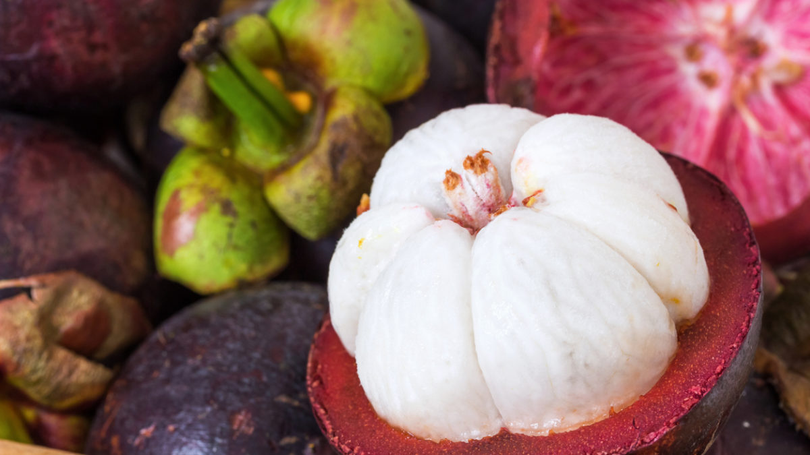

Lucky her she saw a fruit tree on the way. When she got there she didn't reconize the fruit but she still got five of them. she tried one and it was very good! It was veary filling and tasted like cooked meat. After eating she got thirsty but she was wondering if the other fruit would taste like coke, so she tried it. Surprisendly it did! After that filling meal, it got dark so she went back to where she will build her shelter. Build shelter
